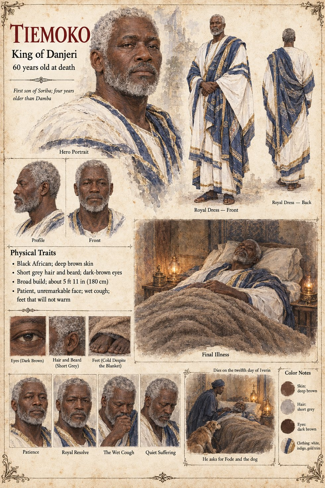

Tiemoko
Elder son of King Soriba, then King of Danjeri for thirty years · three wives, two sons he would not name · 60 years old at death
A broad, patient, unremarkable boy of thirteen when the manuscript first meets him, four years older than Damba, already sitting in on his father's council mornings. After Soriba dies he is Weighed onto the throne of Danjeri in the month of Kerren, with the whole court in attendance and the sky over the Ancestor Court obligingly clear: the Weighing of Tiemoko is the one the histories describe at length, the last one anyone would remember as simple: the elders had settled it three years before, there was no rival, and Balla declared the thread of smoke to be acceptance. He takes three wives in a reign that runs thirty years, Awa, Binta and Sata, and has a son by each. A rumour of the lower town, that when his cough kept him wakeful he went down to the kennel yard in the small hours, alone, and sat on an upturned water-jar beside the dog and said nothing to it for an hour at a time, was true, and unknown to everyone who repeated the rest.
His cough begins as a small dry thing at the back of the throat and becomes a wet thing in the chest. He declines, with the mild, hopeful stubbornness of a man who had always let other people's accounts balance themselves, to name either of his sons as heir, because the old custom forbade it: the Weighing named kings. He dies on the twelfth day of Iverin, in the fourth hour before dawn, with his feet under a wool blanket that has not managed that winter to warm them. He has not asked for his sons; he has received each for an hour on the third day and said nothing a court scribe could not have written in advance. He asks instead for Fode, whom he has known since Fode was a stammering novice, and for the dog. Kolo brings it up the servants' stair with a cloth over his arm; it climbs onto the bed, turns twice and lies across the old man's cold feet, and Tiemoko, who has not smiled in a month, smiles. He says only one thing more, to Fode: I kept the dog fed, to be told to Damba. He dies with the dog on his feet, the Chief Recounter in the doorway and neither son in the room.
The manuscript gives his boyhood, his reign, the cough, the cold feet and the water-jar; it gives no age at death, but its own arithmetic (thirteen at Damba's death, forty-seven years later) makes sixty, which agrees with the sheet. The sheet's 5 ft 11 in (180 cm) broad build, deep brown skin, short grey hair and beard, dark brown eyes, patient face and white-and-indigo royal dress with a gold trim are its own, as are its panels Patience, Royal Resolve, The Wet Cough and Quiet Suffering and its scenes Final Illness and He asks for Fode and the dog.
“I kept the dog fed”